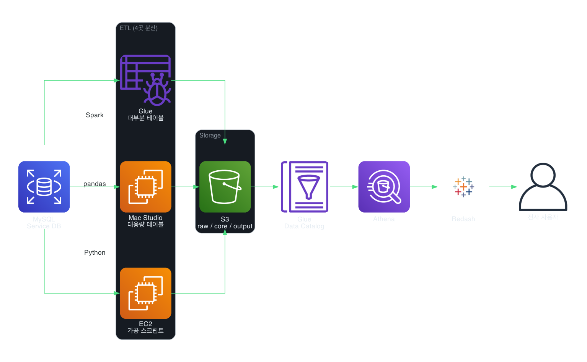

배경
리본즈에는 데이터 파이프라인이 존재하지 않았습니다.
서비스 DB(MySQL) 레플리카에 직접 쿼리를 날려 데이터를 추출하는 방식이었고,
대시보드 수요는 계속 늘어나고 있었습니다.
시도 과정
BI팀 3명이 함께 여러 방안을 검토했습니다.
- 분석 전용 MySQL RDS — OLTP 특성상 대량 분석 쿼리에 한계
- MWAA(Managed Airflow) — 팀 전체의 Python 역량이 부족하여 보류
- AWS Athena — S3 기반 서버리스 쿼리 엔진으로 최종 선택
최종 아키텍처

저는 S3 계층 구조를 raw / core / output 3단계로 기획했습니다.
- AWS Glue Crawler로 스키마 자동 인식 → Data Catalog 생성
- Spark 기반 병렬 분산 처리로 데이터 적재
- Redash를 도입하여 전사 데이터 접근성 확보
최종 구조는 다음 4곳의 인프라로 구성되었습니다.
- Glue — 대부분의 테이블 처리
- Mac Studio — 대용량 테이블 처리
- EC2 — 가공 스크립트 실행
- DW MySQL — 최종 적재
성과와 한계
성과:
- 데이터 파이프라인 0 → 1 구축
- 서비스 DB 직접 쿼리 의존 탈피
- Redash 도입으로 비개발 직군도 데이터에 접근 가능
한계:
- 4곳에 인프라가 분산되어 관리 포인트가 많음
- S3 디렉토리 컨벤션 미준수로 일관성 부족
이 한계들은 이후 Airflow 워크플로우 플랫폼 구축 프로젝트에서 해결되었습니다.